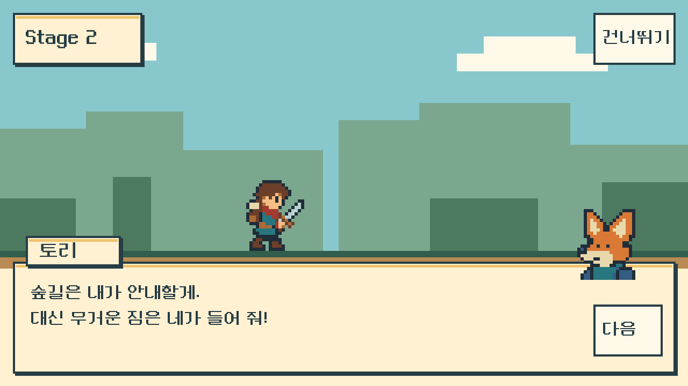
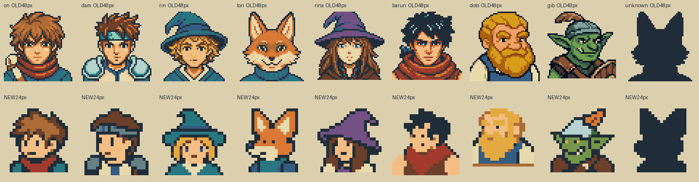
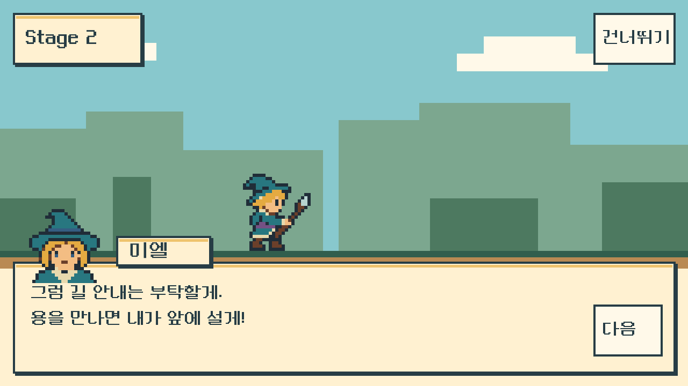
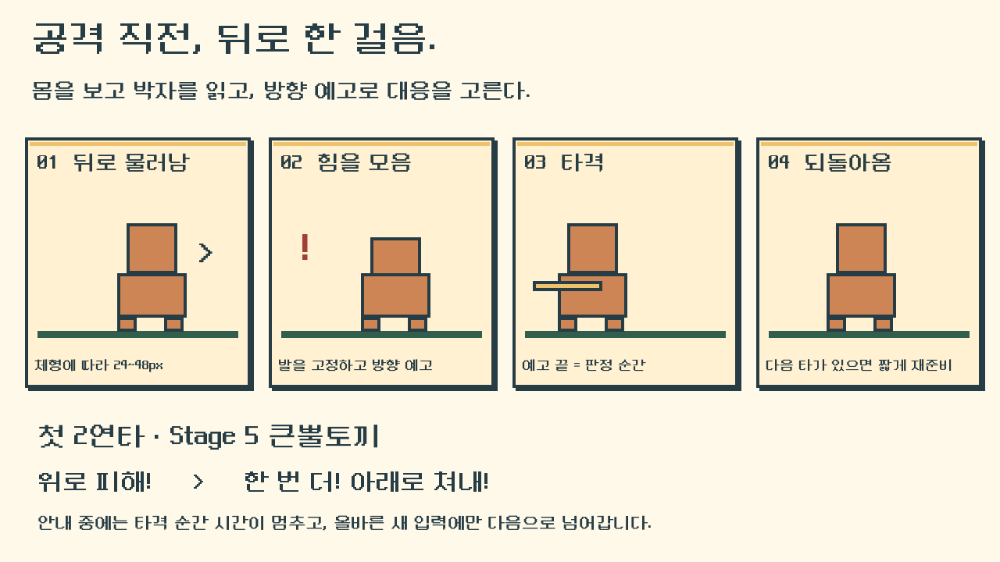
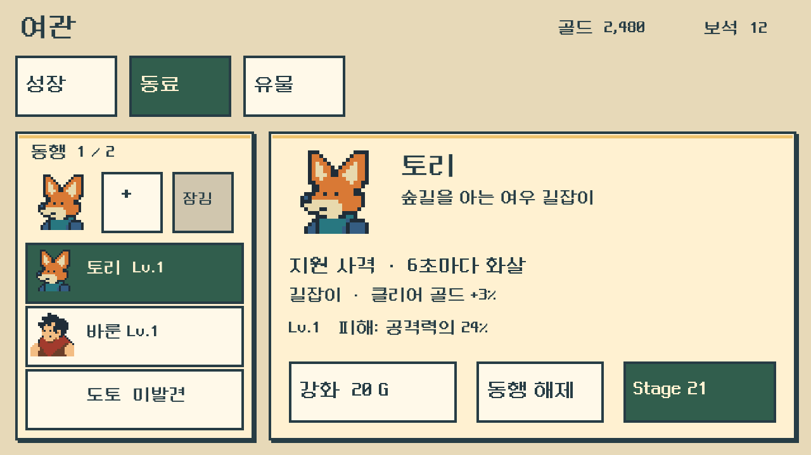

위로 걸친 이름표
NPC 이름표는 패널 왼쪽 위 바깥, 플레이어 이름표는 왼쪽 초상의 오른쪽에 붙입니다. 화자가 바뀌는 순간 이름·초상·좌우 배치를 함께 바꿉니다. 처음 부르는 인물은 ???로 시작하고 소개한 뒤 이름을 공개합니다.
실행 적용 · V0.9.4
동료5종 Idle·Attack·Run 15클립98프레임, 초상10종, 실제 ParticleSystem, 회복력·Stage5 가이드·후퇴 예고를 연결했습니다. 새 계정은 토리·바룬2명, 이전 계정은 기존 해금4명을 지원합니다. 21~50과 모모42 만남은 후속 범위입니다. 아래 합성 시안은 실제 실행 캡처와 구분합니다.
승인된 변경 범위 QA · PASS WITH LIMITS. candidate02의 두 해상도 통합·재시작 4프로세스 및 영향 없는 시각 관측을 채택했습니다. candidate03에서는 바룬의 Stage12 대화만 3캐릭터·2해상도, 30페이지로 재검증해 초상화 오류를 해결 확인했습니다.
통합 기록: Core 217 assertions · 데이터 28 tests · 실제 Unity EditMode 198 passed. 이 수치는 최종 화면 campaign과 별도입니다.
최종 campaign 2개 프로세스 통과. 이 숫자는 전체 과거 후보·채택 증거의 합계가 아닙니다. 일반 배포판은 패키지 검증이며 별도 전체 플레이 통과로 확대하지 않습니다.
작은 초상, 또렷한 이름표.
뒤로 물러나는 적과 처음 배우는 두 번의 대응.
여관에서 준비한 동료와 회복력이 다음 길을 이어 줍니다.

01 · SCREEN DESIGN
플레이어가 말하면 초상은 왼쪽 위, 이름은 그 오른쪽에 둡니다. NPC가 말하면 초상은 오른쪽 위, 이름은 패널 왼쪽 위로 옮깁니다. 밝은 양피지·녹색 도트 UI를 유지하고 초상 뒤의 사각 배경과 테두리는 없앱니다.
NPC 이름표는 패널 왼쪽 위 바깥, 플레이어 이름표는 왼쪽 초상의 오른쪽에 붙입니다. 화자가 바뀌는 순간 이름·초상·좌우 배치를 함께 바꿉니다. 처음 부르는 인물은 ???로 시작하고 소개한 뒤 이름을 공개합니다.
본문을 왼쪽으로 넓게 확보하고 초상·다음 버튼 영역은 비웁니다. 긴 대사는 페이지를 나누며, 글자를 줄여 밀어 넣지 않습니다.
네이티브24×24, 실제5~8색(미상 실루엣1색), 알파0/255. 1280화면에서6배, 640화면에서3배로 확대합니다. 모모도 같은24px 규격으로 제작했습니다. 미엘은 넓은 청록색 모자와 양눈이 보이는 얼굴로 다시 정돈했습니다.


| 요소 | 1280×720, Safe Area 왼쪽 위 기준 x/y/w/h | 동작·640×360 기준 |
|---|---|---|
| 대화 패널 | 24 / 488 / 1232 / 208 | 아래 고정. 초상은 패널 윗변에40px 걸칩니다. |
| 플레이어 이름표 | 216 / 440 / 176 / 56 | 왼쪽 초상의 오른쪽. 긴 이름이면 폭을 확장합니다. |
| NPC 이름표 | 48 / 440 / 176 / 56 | 패널 왼쪽 위 anchor. |
| 플레이어 초상 | 48 / 384 / 144 / 144 | 패널 왼쪽 위. 640화면72×72, 프레임·판 없음. |
| NPC 초상 | 1056 / 384 / 144 / 144 | 패널 오른쪽 위. 640화면72×72, 프레임·판 없음. |
| 본문 | 56 / 532 / 1008 / 132 | 32px / 행간44, 640화면16px / 행간22. 세 줄 초과 시 새 페이지. |
| 다음 / 건너뛰기 | 1104 / 568 / 128 / 96 1104 / 24 / 152 / 96 | 640화면64×48 / 76×48 터치 영역. 서로 겹치지 않습니다. |
| 여관 동료 | 왼쪽24 / 208 / 376 / 488 오른쪽424 / 208 / 832 / 488 | 목록은 세 행을 보여 주고 스크롤. 왼쪽 작은 출전 슬롯, 오른쪽 선택 인물 역할·성장. |
| 성장 탭 | 캐릭터 선택 후, 왼쪽 다섯 스탯 목록 / 오른쪽 선택 스탯 상세 | 공격력·체력·행운·기세·회복력. 각 행 + 버튼96×96, 별점·10칸 성장 표시. 선택 영역과 +는 형제 버튼으로 분리합니다. |
18:9 이상은 배경만 확장하고 Safe Area 안에 같은 기준 영역을 배치합니다. 좁은 영역에서는 세 줄·터치 크기를 먼저 지키고 내용을 페이지로 나눕니다. 실제 기기 터치 검증은 구현 후 진행합니다.
02 · READ THE BODY
몬스터는 공격 전에 뒤로 한 걸음 물러나 힘을 모읍니다. 방향 예고를 보면서 몸의 준비 동작으로 타격 박자까지 읽을 수 있게 만듭니다.

작은 적48px, 큰 적32px, 거대 보스24px를 출발값으로 잡습니다. 첫 타격500ms 전에 후퇴를 시작합니다. 250ms 후퇴 →90ms 준비 →160ms 전진으로 단타와 첫 연타의 박자를 통일합니다.
1타 복귀를 먼저 끝내고, 다음 타에는12px·120ms의 짧은 후퇴를 씁니다. 후퇴가 끝난 뒤90ms 준비·160ms 전진은 첫 타와 같습니다. 타격 간750ms를 늘리지 않습니다. 다음 예고가 이전 복귀 동작을 끊지 않게 합니다.
두 발은 뒤딛기, 슬라임은 뒤로 움츠림, 네 발은 뒷발 지지, 공중형은 뒤로 떠밀림. 큰 보스는 몸을 뒤로 빼고 어깨·머리에 힘을 모읍니다. 발과 무기는 이어져야 합니다.
| 예시 | 후퇴·준비 | 접촉 | 복귀·다음 타 |
|---|---|---|---|
| 단타 | 400~650ms 후퇴 →740ms까지 준비 | 740~900ms 전진 / 900ms 판정 | 900~1180ms 복귀 |
| Stage5 2연타 | 1300~1550ms 후퇴 →1640ms까지 준비 | 1타1800ms / 2타2550ms | 1타 복귀2080ms 완료 →2180ms까지 대기 →2300ms까지 짧은 후퇴 →2390ms부터2타 전진 |
회피 창·위험 영역은 현재 규칙을 유지합니다. 접촉 포즈와 피격 이펙트가 전투 시계의 ImpactAt에 맞아야 합니다. 모션은 체형별4~6개의 준비 포즈로 제작하며, 두 위치를 튕기는2프레임으로 완료하지 않습니다.
03 · FIRST COMBO
첫 연속 공격은 큰뿔토끼 중간 보스전입니다. 설명 확인 뒤 두 번의 실제 새 입력으로 완료하는 행동 가이드를 연결했습니다.
위 회피 → 아래 쳐내기로 고정합니다. 각 타격 순간 전투 시계를 멈추고 해당 버튼만 강조합니다. 올바른 새 입력이 들어오면 회피·쳐내기 모션과 그 타격을 한 번 처리합니다.
누른 채 버티거나 미리 연타한 입력은 다음 단계로 넘어가지 않습니다. 안내 중에는 일반 공격·스킬·동료 공격을 잠시 잠급니다.
두 대응을 마치면 완료를 저장하고 같은 위→아래2연타를 정상 속도로 한 번 이어갑니다. 여기부터는 일반 피해를 받지만 실패했다고 안내를 강제로 반복하지 않습니다.
연습은 일반 회피·일반 쳐내기로 처리하며 완벽 보상·기절 누적을 주지 않습니다. 진입 시 남은HP를 유지하고, 건너뛰기와 도움말 다시 보기도 제공합니다.
기존의 “연속 공격 안내를 읽음” 기록은 새 행동 튜토리얼 완료와 다릅니다. 계정당 한 번 진행하고 두 입력을 마쳤을 때 완료합니다. 완료 또는 건너뜀 기록이 있으면 자동 재진입하지 않습니다. 도움말 다시 보기는 보상 없는 별도 연습 상태이며 실제 원정의 HP·쿨타임·진행을 그대로 보존합니다. 중단 후에는 첫 연습 타부터 복구하며 HP나 보상을 중복 지급하지 않습니다.
04 · ONE FRIEND IN EACH REGION
첫 만남은 2·12·22·32·42스테이지 적 처치 후입니다. 지역 초반에 동료를 만나고, 중간 보스·지역 보스의 연출과는 겹치지 않게 배치합니다.
새 계정의 첫 만남은 토리2·바룬12이며, 도토22·리나32·모모42는 후속 구간입니다. 이전7·15·20 대화는 진행 중인 저장을 위해 남겨 둡니다. 이미 만난 NPC는 저장 이전 시 유지하므로 다시 잠기지 않습니다. 기존 보스 뒤 대사는 첫 자기소개를 반복하지 않고 다음 길을 알려 주는 짧은 대사로 고칩니다.
대화를 마치거나 건너뛰어도 한 번 해금합니다. 첫 토리는 빈1번 슬롯에 자동 동행합니다. 이후에는 빈 슬롯이 있으면 “함께 가기”, 가득 차 있으면 “여관에서 만나”로 짧게 마칩니다. 전투 중 상시 편성 교체는 없습니다.
토리는 길을, 바룬은 짐과 정찰을, 도토는 무기를, 리나는 마법을, 모모는 회복 준비를 보탭니다. 산길을 막은 용을 혼내 주러 가는 목적은 유지합니다. 동행NPC5명은 모두 전투에 데려갈 수 있습니다.
05 · HEALTH THAT CARRIES ON
회복력을 다섯 번째 강화 스탯으로 추가합니다. 살아서 적을 쓰러뜨리면 회복력에 표시된HP만큼 한 번 회복합니다. 회복은 지속 재생이나 최대HP 비례가 아닙니다.
다음 HP = min(최대 HP, 현재 HP + 회복력)
적 소멸 직후, 다음 달리기·대화 전에 처리합니다. HP바가 짧게 늘고 플레이어 아래에 실제 회복한 양만 +5처럼 표시합니다. 이미 최대HP라면 숫자는 생략합니다.
보스 대사·유물 화면·체크포인트 저장으로 추가 회복하지 않습니다. 같은 도전의 HP는 다음 지역까지 이어집니다. 사망 시에는 회복하지 않으며 새 출전은 최대HP로 시작합니다.
기본 회복5HP. 루카★★★·다렌★★★★·미엘★★입니다. 기존 스탯처럼10칸을 채우고11·21에서 큰 폭으로 성장합니다. 수치는 첫 밸런스안이며 실측 난이도 조정 대상입니다.
| 회복력 강화 | Lv0 | Lv10 | Lv11 | Lv20 |
|---|---|---|---|---|
| 루카 ★★★ | 5HP | 25HP | 49HP | 81HP |
| 다렌 ★★★★ | 5HP | 30HP | 60HP | 102HP |
| 미엘 ★★ | 5HP | 20HP | 38HP | 61HP |
매 클리어 회복 계산 · 일반 적과 보스 모두 같은 결과
기획 수치 계산기입니다. 게임 데이터나 저장 파일에는 연결되지 않습니다.
회복과 클리어 기록은 같은 보상 거래에 저장합니다. 재접속·대사 다시 보기·정산 재시도는 같은 클리어를 다시 회복시키지 않습니다. 체크포인트는 시작 스테이지를 정하며, 진행 중 저장 복원에 새 출전의 최대HP 초기화를 적용하지 않습니다.
06 · THE INN & YOUR PARTY
NPC는 이야기 등장 이후 동료 탭에 남습니다. 여관의 직업 서비스와 전투 중 자동 공격을 구분해, 한 캐릭터의 역할을 두 곳에서 느끼게 만듭니다.

토리는 활, 바룬은 대검, 도토는 망치, 리나는 바람 마법, 모모는 씨앗 주머니를 사용합니다. 모두32px 높이 기준,8색 이하의 원본으로 제작했습니다. 플레이어보다 작은4배 표시를 기준으로 잡습니다.
대기는 각4프레임, 달리기는 각8프레임, 공격은 각8프레임이며 도토 공격은 중복 회복 포즈를 뺀6프레임입니다. 공격 시작180ms에 한 번 타격하고600ms에 복귀합니다. 무기가 잘리지 않도록 바룬·도토 공격에는 투명 여백을 더했습니다.
프레임·피벗·타격시각 명세 · 원본 검수 · 모모 초상
아트 원본을 저장 배우에 연결했습니다. 실제 동행·공격·달리기를 확인한 범위는 상단 최종 QA 기록을 따릅니다.
| 동료 | 여관 상호작용 | 동행 중 공격 | 성장 |
|---|
2번째 슬롯은10보스 클리어·바룬 만남 후 보석4개, 3번째는30보스 클리어 후 보석8개입니다. 계정 공통 확장, 캐릭터별 편성. 같은 NPC를 중복 배치할 수 없습니다.
각 동료를 골드로 강화합니다. 첫 강화20G, Lv1→10 합계212G.11·21에서 공격 성능이25% 돌파합니다. 무기 제작·슬롯 확장 등 서비스는 단계 조건과 비용을 따로 보여 줍니다.
동료는6~10초 주기로 한 번 공격합니다. 치명타·기절·전용 스킬 쿨타임 단축은 발생시키지 않습니다. 합산 평균 공격량은 플레이어 기본 공격력의24%/초 이내로 제한합니다.
동료는 플레이어 뒤쪽에 작은 대기 포즈로 서고 공격 순간만 짧게 나옵니다. 일반 피격은 적의 공격 예약을 끊지 않으며, 기절·사망으로 Core가 취소한 공격만 중단합니다. 플레이어 몸·방향 예고·바닥 가시·화살 경로를 가리지 않습니다. 일반 지원 타격의 VFX는 작게, 카메라 흔들림과 입력 유도는 없습니다. 막타는 기존 공통 처치 피드백을 한 번 적용합니다.
전투 시계에서만 주기가 흐르며 이동·등장·포효·대화·튜토리얼 정지·일시정지에서는 멈춥니다. 같은 원정의 남은 주기는 다음 적에게 이어지고, 적이 없는 동안 공격을 쌓지 않습니다. 재출전 시 첫 주기부터 시작합니다. 여러 동료의 최초 공격 위상은0.4초씩 나눕니다.
마지막 타격으로 적이 죽으면 일반 처치 한 번으로 처리합니다. 사용자의 이미 접수된 공격·회피를 빼앗지 않고, 취소된 적 공격은 다시 나오지 않습니다. 쿨타임·대상·중복 공격 키를 저장해 재개 때 여러 발을 한꺼번에 발사하지 않습니다.
선택 NPC의 서비스 행을 누르면 효과·지속 시간·조건·정확한 비용이 있는 상세창을 엽니다. 도토는 제작/개량, 리나는 축복 예약, 모모는 차 준비, 바룬은 슬롯 확장입니다. 무료 상시 효과인 토리 길 안내에는 구매 버튼이 없습니다.
07 · PIXEL PARTICLES
스킬과 동료 공격에 실제 ParticleSystem 기반의 작은 네모 입자를 더합니다. 이미 일어난 타격과 실제 남은 상태를 보여 주며, 효과가 별도의 피해·기절·회복·쿨타임을 만들지는 않습니다.
실제 ParticleSystem 연결. 아래는 적용한 효과의 시각·종료 계약입니다. 실제로 확인한 QA 범위와 남은 한계는 이 페이지 상단의 결과를 따릅니다.
| 효과 유형 | 시각 언어 | 언제 종료 |
|---|---|---|
| 루카 · 바람 베기 | 플레이어에서 적까지 긴 사선의 골드·크림·황토 네모 잔광과 접촉 파편. 기존 참격이 선택한0~5 랜덤 방향을 그대로 공유합니다. | 확정 스킬 타격 뒤0.14~0.22초. |
| 다렌 · 철벽 반격 | 실제 반격 피해가 발생한 곳에 파랑·크림 접촉 조각. | 0.20초. |
| 다렌 · 보호막 테두리 | 몸과 위험 방향을 비운 성긴 파랑·남색·크림20점. 실제3초 보호막의 남은 상태를 읽고, 마지막600ms에는 점만 작아집니다. | 실제 보호막 소진·남은 시간0·사망 때 제거. 별도3초 타이머로 유지하지 않습니다. |
| 다렌 · 흡수와 시간 종료 | 실제 흡수에는 짧은 파란 파편, 시간 만료에는 작은 파란 조각4개. 두 효과를 중복 발동하지 않습니다. | 흡수0.22초 / 시간 만료0.18초. |
| 미엘 · 별빛 봉인 접촉 | 확정 스킬 피해 위치에 민트·크림 도트. 없는 슬로우·지속 피해·속박은 표현하지 않습니다. | 0.22초. |
| 미엘 · 기절 누적과 준비 | 적 얼굴 위 민트·초록8점으로 실제 누적량 표시. 준비100이면 크림4점을 더합니다. | 실제 기절 진입·면역·누적0·적 사망·장면 이탈. |
| 실제 기절 · 모든 캐릭터 | 적 머리 주위를 도는 작은 민트·크림 도트별3개. 누적·준비 표시와 동시에 그리지 않습니다. | 실제 기절 종료·적 사망·장면 이탈 즉시. 면역만 남아 있으면 표시하지 않습니다. |
| 강화·무기 제작 / 축복 / 회복 | 강화는 골드·크림·황토, 축복은 파랑·크림·남색, 실제 회복·약초차 예약은 민트·크림·초록. 성공한 명령이나 실제 회복마다 한 번만 떠오릅니다. | UI 시간0.32~0.40초. 실패·취소·화면 재표시에는 시작하지 않습니다. |
| 토리 · 지원 화살 | 토리 몸에서 출발하는 골드·황토·크림 네모5개의 작은 화살. | 실제 예비시간180ms 끝에 현재 적 몸 위치 도착. 사망·스테이지 교체 시 남은 화살 제거. |
| 리나 · 바람 방울 | 보라·진보라·크림 네모4개의 방울. 미엘의 민트 봉인과 구분합니다. | 동료 예비시간 끝에 현재 적 위치 도착. 사망·스테이지 교체 시 제거. |
| 모모 · 씨앗 주머니 | 테라코타·갈색·크림 네모4개. 모모 배우에서 출발합니다. | 동료 예비시간 끝에 현재 적 위치 도착. 사망·스테이지 교체 시 제거. |
| 동료의 실제 접촉 | 확정 피해 때 해당 동료 색의 작은 파편6개. 바룬·도토는 발사체 없이 실제 접촉 파편만 표시합니다. | 0.16초. 배우나 확정 피해가 없으면 임의 위치에 생성하지 않습니다. |
타격·동료 발사체·기절별은 전투 시계를 따라 일시정지와 가이드 입력 대기에서 멈춥니다. 확정 막타의 남은 입자만 최대0.24초 동안 정리합니다. 대화와 보스 등장 중에는 새 공격 효과를 시작하지 않습니다.
강화·축복·회복 효과는 UI 시간으로 짧게 사라집니다. 효과는 버튼 입력을 가로채지 않고, 방향 예고·HP·캐릭터 몸을 비워 둡니다.
고정 ParticleSystem4개를 투명 RenderTexture에 그려 전투와 여관에 합성합니다. 화면2픽셀당1텍셀·Point 기준으로1~3텍셀 네모가 보통2·4·6화면픽셀로 보입니다.
부드러운 발광·블룸·그라데이션·전체 화면 섬광을 쓰지 않습니다. 각 네모는 정해진 수명에 사라집니다. 최종 위치·투명도·해상도별 가독성은 실제 QA 화면에서 확인합니다.
효과의 실제 상태·시계·렌더링 인계 문서 · 스킬20초 쿨타임과 피해·보호·기절 수치는 기존 전투 상태가 결정합니다.
08 · PLANNING HANDOFF
새 대화 배치·24px 초상10종, 회복력, 몬스터 후퇴 준비, Stage5 행동 튜토리얼, 토리2·바룬12 만남과 동료 탭을1~20 구현 묶음에 연결했습니다. 새 계정은 이 구간에서2명, 이전 계정은 최대4명이므로 토리·바룬·도토·리나의 지원 공격·서비스 데이터도 함께 준비합니다.
도토22·리나32·모모42의 새 첫 만남은 뒤 지역을 제작할 때 연결합니다. 모모 아트와 서비스 구현은42스테이지의 자연 진행 해금을 뜻하지 않습니다. 이미 만난 NPC의 서비스는 해금 기록을 보존하며, 아직 도달하지 않은 보스 단계 조건은 유지합니다. 현재 실행 가능한 구간은 여전히1~20입니다.
전투 담당은 실제 HP 초기화·콤보 시간표를 확인했고, 성장 담당과 지역 초반 만남·슬롯 비용·숨은 자동 공격 조건 제거를 함께 정했습니다. 아트 담당은24px 초상9종의 미엘을 재정돈하고 모모 초상을 추가했습니다. 동료5종의 Idle·Attack·Run 15클립98프레임을 임포트하고 저장 배우에 연결했습니다. 실제 검증 범위는 상단 QA 기록과 구분해 표시합니다.
이 페이지는 확정 설계·아트와 현재1~20 적용 기록을 함께 보여 줍니다. 새 기능 전체를 무조건 QA 완료로 간주하지 않으며, 실제 승인한 범위·채택 증거·미실시 항목은 상단 최종 보고서를 따릅니다. 시안·계산기·후속50층 설계는 실행 검증 증거가 아닙니다.